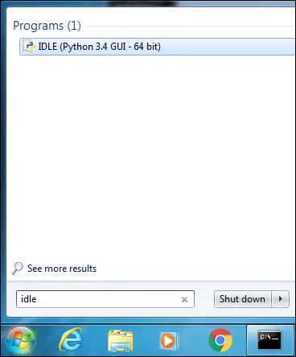
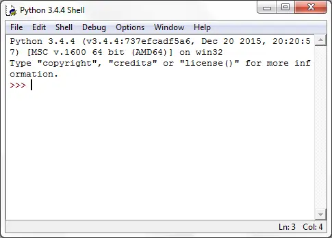
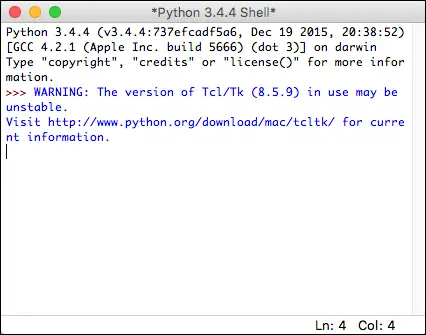
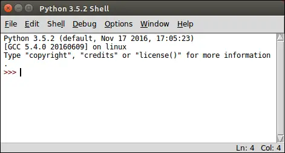
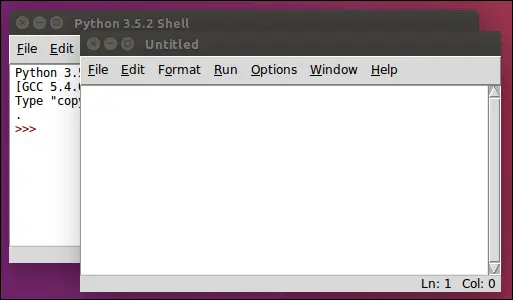
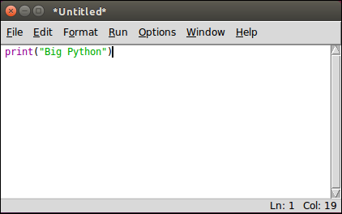
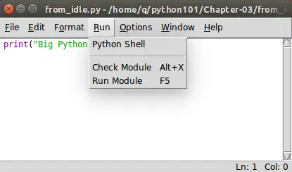
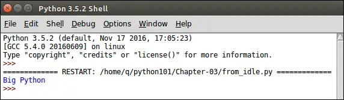

IDLE and Python Shell
Last updated on September 06, 2020
In this course we will be using Python 3.4, but you would be fine if you choose to use Python 3.4 or above.
In the last chapter, we have installed Python Interpreter. An Interpreter is a program which translates your code into machine language and then executes it line by line.
We can use Python Interpreter in two modes:
- Interactive Mode.
- Script Mode.
In Interactive Mode, Python interpreter waits for you to enter command. When you type the command, Python interpreter goes ahead and executes the command, then it waits again for your next command.
In Script mode, Python Interpreter runs a program from the source file.
Interactive Mode #
Python interpreter in interactive mode is commonly known as Python Shell. To start the Python Shell enter the following command in terminal or command prompt:
1 2 3 4 5 | C:\Users\Q>python
Python 3.4.4 (v3.4.4:737efcadf5a6, Dec 20 2015, 20:20:57) [MSC v.1600 64 bit (AM
D64)] on win32
Type "help", "copyright", "credits" or "license" for more information.
>>>
|
If you system has Python 2 and Python 3 both, for example Ubuntu comes with Python 2 and 3 installed by default. To start the Python 3 Shell enter python3 instead of just python.
1 2 3 4 5 | q@vm:~$ python3
Python 3.5.2 (default, Nov 17 2016, 17:05:23)
[GCC 5.4.0 20160609] on linux
Type "help", "copyright", "credits" or "license" for more information.
>>>
|
What you are seeing is called Python Shell. >>> is known as prompt string, it simply means that Python shell is ready to accept you commands. Python shell allows you type Python code and see the result immediately. In technical jargon this is also known as REPL short for Read-Eval-Print-Loop. Whenever you hear REPL think of an environment which allows you quickly test code snippets and see results immediately, just like a Calculator. In Python shell, enter the following calculations one by one and hit enter to get the result.
1 2 3 4 5 6 7 8 9 10 11 12 13 | >>>
>>> 88 + 4
92
>>>
>>> 45 * 4
180
>>>
>>> 17 / 3
5.666666666666667
>>>
>>> 78 - 42
36
>>>
|
In Python, we use print() function to print something to the screen.
In the Python shell type print("Big Python") and hit enter:
1 2 3 4 | >>>
>>> print("Big Python")
Big Python
>>>
|
We have just used two important programming constructs - A function and a string.
print()is a function - A function in programming is a chuck of code which does something very specific. In our case, theprint()function prints the argument (i.e"Big Python") it is given to the console.A string is just a sequence of string enclosed inside single or double quotes. For example:
"olleh",'print it'are strings but1and3are not.
Don't worry, we are not expecting you understand these things at this point. In upcoming lessons we will discuss these concepts in great detail.
Commands such as 17 / 3, print("Big Python") are know as statements in programming. A statement is simply a instruction for the Python interpreter to execute. Statements are of different types as we will see. A program usually consists of sequence of statements.
To quit the Python shell in Windows hit Ctrl+Z followed by the Enter Key, On Linux or Mac hit Ctrl+D followed by Enter key.
Script Mode #
Python Shell is great for testing small chunks of code but there is one problem - the statements you enter in the Python shell are not saved anywhere.
In case, you want to execute same set of statements multiple times you would be better off to save the entire code in a file. Then, use the Python interpreter in script mode to execute the code from a file.
Create a new directory named python101, you can create this directory anywhere you want, just remember the location because we will use this directory to store all our programs throughout this course. Create another directory inside python101 named Chapter-03 to store the source files for this chapter.
To create programs you can use any text editor, just make sure to save your file as plain text. However, if you are desperately looking for recommendation go for Sublime Text.
Create a new file named hello.py inside Chapter-03 directory add the following code to it:
python101/Chapter-03/hello.py
1 2 3 | print("Woods are lovely dark and deep")
print("but I have promises to keep")
print("and miles to go before I sleep")
|
By convention, all Python programs have .py extension. The file hello.py is called source code or source file or script file or module. To execute the program, open terminal or command prompt and change your current working directory to python101 using the cd command, then type the following command:
1 2 3 | Woods are lovely dark and deep
but I have promises to keep
and miles to go before I sleep
|
Note: On Windows use python hello.py to execute the the program.
This command starts the Python interpreter in script mode and executes the statements in the hello.py file.
We know that in the Python Shell, if you type any expression and hit enter, the Python interpreter evaluates the expression and displays the result.
1 2 3 4 5 6 7 8 9 10 | >>>
>>> 12+8
20
>>> 75/2
37.5
>>> 100*2
200
>>> 100-24
76
>>>
|
However, if you type these statements in a file and run the file, you will get no output at all. Create a new file named no_output.py in the Chapter-03 directory and add the following code to it.
python101/Chapter-03/no_output.py
1 2 3 4 | 12+8
75/2
100*2
100-24
|
To the run the file enter the following command.
1 2 | q@vm:~/python101/Chapter-03$ python3 no_output.py
q@vm:~/python101/Chapter-03$
|
As you can see, the program didn't output anything.
To print values from Python script you must explicitly use the print() function. Create a new file named no_output2.py with the following code:
python101/Chapter-03/no_output2.py
1 2 3 4 | print(12+8)
print(75/2)
print(100*2)
print(100-24)
|
Output:
1 2 3 4 | 20
37.5
200
76
|
IDLE #
In addition to installing Python interpreter, the Python installer for Mac and Windows also installs a lightweight Integrated Development Environment or IDLE for short.
So What is IDLE ?
IDLE allows to create/read/edit and execute your programs under the same roof without touching the command line. You can also access Python Shell from IDLE.
To start IDLE on Windows click the Start Menu and search "IDLE" or "idle". Click IDLE as shows in the figure and you will see a window which looks something like this:


This is again Python Shell, just type the commands, hit enter and it will display the result.
1 2 3 4 5 6 7 8 9 | >>>
>>> print("Big Python")
Big Python
>>>
>>> 12 + 774
786
>>> 89 * 321
28569
>>>
|
To start IDLE on Mac simply type idle3 in the terminal.

Ubuntu doesn't come with IDLE installed. This is true whether you are using Python which comes pre-installed with Ubuntu or you have installed it yourself by entering the commands in the lesson Installing Python.
To install IDLE issue the following command in the terminal.
q@vm:~/python101/Chapter-03$ sudo apt-get install idle3
To start IDLE, type the idle3 and hit enter in the terminal:
q@vm:~/python101/Chapter-03$ idle3

Let's now use IDLE to create a Python program. IDLE also has a built-in text editor to write Python programs. To create a new program go to File > New File. A new Untitled window will open. This window is a text editor where you can write programs.

Type the following code in the editor:
print("Big Python")

Hit Ctrl + S or Go to File > Save As. Save the file as from_idle.py in the Chapter-03 directory. To run the program, Go to Run > Run Module or Hit F5.

You editor window will move into the background, Python Shell will become active and you will see the output of your from_idle.py program as follows:

Types of Errors #
In programming errors are inescapable, sooner or later you will encounter one. Programming errors are mainly divided into three types:
- Syntax Errors.
- Runtime Errors.
- Logical Errors.
Syntax Errors #
The syntax is a set of rules to properly write a Computer language. Syntax errors happen when you don't follow the syntax rules. They commonly occur in your code due to a typo. When a syntax error is encountered in the program, the execution of the program is halted and Python interpreter displays an error message explaining the probable cause of the error. The syntax error occurs when the statement is being translated to machine language but before it is executed. A component of interpreter called parser discovers these errors.
Here are some of the common causes of Syntax errors:
- Misspelled keywords.
- Incorrect use of an operator.
- Omitting parentheses in a function call.
- Not wrapping strings in single quotes or double quotes.
and so on.
The following Python shell sessions demonstrate some Syntax errors:
Example 1:
1 2 3 4 5 6 7 | >>>
>>> 4 +
File "<stdin>", line 1
4 +
^
SyntaxError: invalid syntax
>>>
|
In the above example, we are attempting to add two numbers, but we forgot to include the second number. That's why Python interpreter reports SyntaxError. Also, notice that caret symbol (^) points to a position where Python interpreter thinks is the cause of the problem.
Example 2:
1 2 3 4 5 6 7 | >>>
>>> print("Big Python)
File "<stdin>", line 1
print("Big Python)
^
SyntaxError: EOL while scanning string literal
>>>
|
In this case, we forgot to end the string with double quotes, that's why syntax error in encountered. Notice again that the caret symbol is pointing to the position where Python interpreter thinks is the cause of the problem.
Fixing syntax errors is quite easy, you just have to train your eyes to look for the caret symbol (^).
Runtime Errors #
As the name says, Runtime Errors are errors which occurs while the program is running. Just like Syntax errors, when they are encountered execution of the program is halted and interpreter displays a message about the probable cause of the problem.
They usually occurs when interpreter counters a operation that is impossible to carry out. One such operation is dividing a number by 0. Since dividing a number by 0 is undefined. When interpreter encounters dividing by 0 operation it raises ZeroDivisionError as follows:
1 2 3 4 5 6 | >>>
>>> 99/0
Traceback (most recent call last):
File "<stdin>", line 1, in <module>
ZeroDivisionError: division by zero
>>>
|
Here are some other common causes of runtime errors:
- Runtime error may occur when you try to create new variable and the system runs out of memory.
- Trying to use a function or variable which is not yet defined.
- Accessing a file which doesn't exists.
and so on.
Logical Errors #
Logical error occurs when the program produces incorrect results. For example, let's say we are creating a simple program to convert temperature from Fahrenheit to Celsius as follows:
python101/Chapter-03/fah_to_cel.py
1 2 | print("20 degree Fahrenheit in degree Celsius is: ")
print(5 / 9 * 20 - 32)
|
Output:
1 2 | 20 degree Fahrenheit in degree Celsius is:
-20.88888888888889
|
The above program outputs -20.88888888888889, which is wrong. The correct value is -6.666. These types of errors are called logical errors. To get the correct answer use 5 / 9 * (20 - 32) instead of 5 / 9 * 20 - 32. The parentheses around 20 - 32, forces Python to perform subtraction before division and multiplication. We will learn the reason behind doing so in lesson Operators in Python.
Load Comments